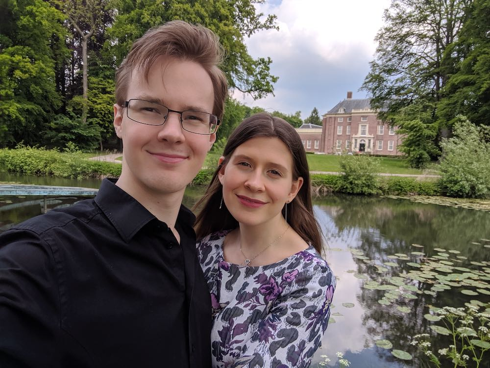

Top secret
Привет моя самая любимая Катюша,
Я решил тебе написать такое послание - по-современному:)
Это специальная ссылка для тебя, тут буду ставить какие--нибудь приятные и/или секретные вещи. Идея такая возникла вчера после ванной.
Пока ещё выглядит так себе, но так пожалуй тоже имеет шарм (ну вот, опять я начинаю напрашиваться на комплименты).
Вообщем я хочу тебе сказать что тебя люблю больше всего на свете, и, что если мы будем сильными мы справимся с этой мучительной
разлукой. И даже сможем добиться того что ты больше всего желаешь! Я этого ведь тоже хочу!
Очень хочу бесконечно просить у тебя прощения, что был такой настоящий круглый и жирный идиот (и не пытайся возразить на это)!! Я не
буду так больше, буду много делать и работать, чтобы через два года выстроить с тобой именно то самое что мы хотим!
Держись! Наша настоящая любовь победит все!
Хочу ещё написать намного больше, и обязательно буду тут прибавлять.
Бесконечно любящий тебя, Мартин
А вот ещё ссылки на игрушки, обязательно тренируйся и успевай отдыхать!!!
0hh1
0hn0
